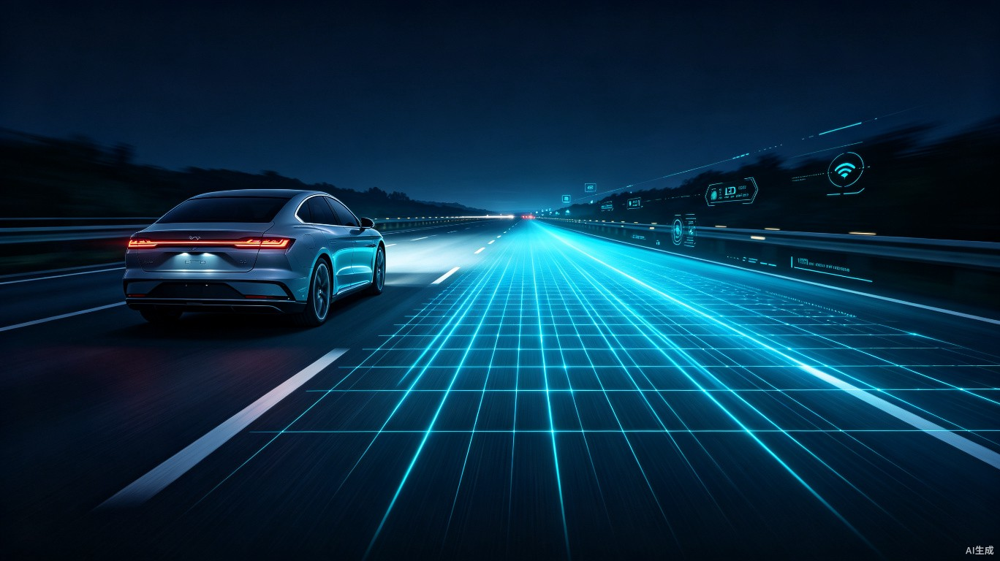

智能自适应防眩目车灯系统
以 AI 视觉感知与精密光学控制，重新定义夜间驾驶安全体验
01系统概述
夜间行车中，对向车辆远光灯造成的眩目是导致视觉暂盲和交通事故的主要原因之一。据统计，夜间交通事故率约为白天的 1.5 倍，其中约 30% 与不当使用远光灯直接相关。
本方案提出一套智能自适应防眩目车灯系统（Intelligent Adaptive Anti-Glare Headlight System, IAAGHS），通过多传感器融合感知、AI 实时决策与高精度矩阵 LED 光学控制，在保障本车照明需求的同时，智能遮蔽对向车辆和前方车辆的眩光区域，实现"亮己不晃人"的驾驶体验。
系统核心采用 前视双目摄像头 + 毫米波雷达 + 环境光传感器 的多模态感知架构，结合深度学习目标检测与轨迹预测算法，能够在 300 米外精准识别对向车辆，并以毫秒级响应速度动态调整光束分布。
02技术架构
三层架构设计：感知层、决策层、执行层，实现从环境感知到光学控制的闭环。
感知层
双目摄像头（120° FOV）+ 77GHz 毫米波雷达 + 环境光传感器。多模态数据融合，实现全天候、全场景目标检测与距离估计。
决策层
边缘 AI 芯片（NPU 算力 8 TOPS）运行轻量化目标检测模型与轨迹预测算法，50ms 内完成目标分类、距离计算与遮光区域规划。
执行层
高密度矩阵 LED 模组（单灯 84 颗独立可控像素），配合 DMD 数字微镜或 LCD 遮光器，实现亚度级精度的光束动态分割与遮蔽。
flowchart TB
subgraph sense["感知层 Sensing"]
cam["双目摄像头"]
radar["毫米波雷达"]
lux["环境光传感器"]
end
subgraph fusion["数据融合"]
fuse["时空对齐与特征融合"]
end
subgraph decision["决策层 Decision"]
detect["目标检测与分类"]
track["轨迹预测"]
plan["遮光区域规划"]
end
subgraph act["执行层 Actuation"]
led["矩阵 LED 控制器"]
opt["光学模组"]
end
cam --> fuse
radar --> fuse
lux --> fuse
fuse --> detect
detect --> track
track --> plan
plan --> led
led --> opt
03核心价值
系统从效率、社会与商业三个维度创造显著价值。
效率提升
夜间驾驶安全性显著提升。驾驶员在会车场景下的视觉负荷降低，无需频繁手动切换远近光，可更专注于道路状况判断。
社会价值
有效减少因眩目导致的夜间交通事故。据模拟测算，在城市主干道与高速公路上可降低约 25% 的夜间碰撞风险。
商业价值
可作为智能汽车标准子系统方案，面向 OEM Tier-1 供应商输出。同时支持后装市场升级套件，具备灵活的商业模式。
04应用场景
覆盖多种典型夜间驾驶环境，确保全场景安全。
城市主干道
识别对向车道与十字路口行人，动态遮蔽来车区域同时保持路面照明连续性。
高速公路
300m 超远距离预判对向货车，提前分段调整光型，避免驾驶员瞬间眩目。
乡村道路
无路灯环境下最大化本车视野，精准避开对向农用车与非机动车。
恶劣天气
融合雷达穿透雨雾，结合路面反光模型优化，降低积水路面眩光反馈。
05竞争优势
与传统 ADB（Adaptive Driving Beam）方案相比，本系统在多维度上实现代际升级。
| 对比维度 | 传统 ADB | 本方案 IAAGHS |
|---|---|---|
| 感知手段 | 单目摄像头 | ✓ 摄像头 + 毫米波雷达融合 |
| 识别距离 | 约 150m | ✓ 300m+ |
| 响应延迟 | 200-300ms | ✓ < 50ms |
| 遮光精度 | 区域级（约 5°） | ✓ 像素级（< 0.5°） |
| 轨迹预测 | ✗ 无 | ✓ 3秒轨迹预测 |
| 恶劣天气 | ✗ 性能衰减明显 | ✓ 雷达冗余保障 |
| OTA 升级 | ✗ 不支持 | ✓ 模型持续迭代 |
06实施路线图
分三阶段推进，从技术研发到规模量产。
第一阶段：技术验证与原型开发
完成核心算法开发与仿真验证，搭建台架测试环境。与头部 Tier-1 供应商建立联合实验室，完成矩阵 LED 光学模组选型与集成验证。
第二阶段：整车集成与道路测试
在 3-5 款合作车型上完成前装集成，开展累计 10 万公里以上公共道路测试。获取功能安全 ASIL-B 认证，建立数据闭环与模型迭代机制。
第三阶段：量产交付与市场推广
达成年产 50 万套产能，覆盖 10+ 主流 OEM 品牌。同步推出后装市场升级套件，拓展海外欧洲、东南亚市场。
07总结与展望
智能自适应防眩目车灯系统不仅是光学技术的升级，更是AI 感知与汽车安全深度融合的典范。
通过多传感器融合感知、边缘 AI 实时决策与高精度光学执行，本方案在提升夜间驾驶效率的同时，创造了巨大的社会安全价值与商业增长空间。随着智能汽车的普及与自动驾驶等级的提升，自适应照明将从"舒适配置"进化为"安全刚需"。
未来，系统可进一步扩展为车路协同照明节点，通过 V2X 通信提前获取盲区来车信息，实现超视距防眩目；同时结合高精地图与导航数据，预判弯道、坡道照明需求，构建全方位的主动安全照明生态。